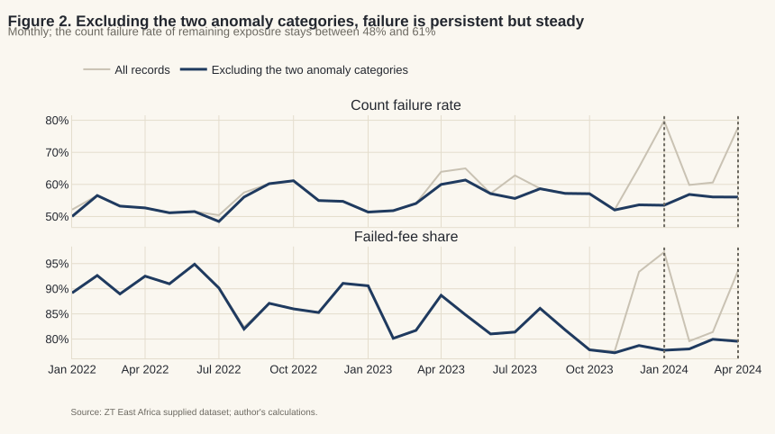
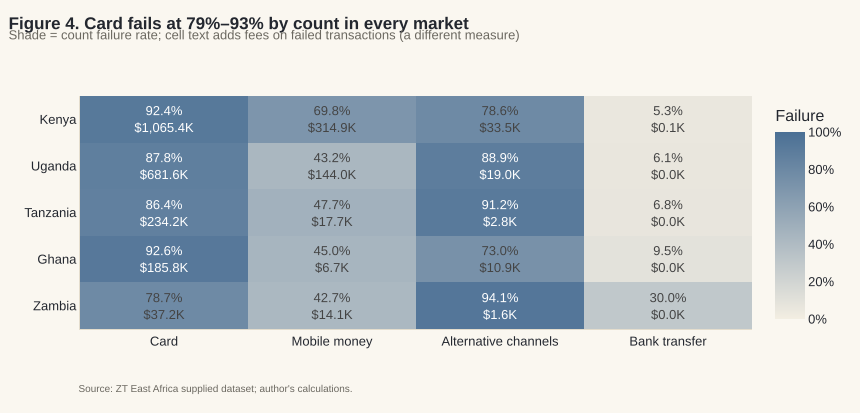

The Economics
of Payment Failure
Contact
Jasco John, CPA (T), MBA (Finance)
Emailjasco.john98@gmail.com
Telephone+255 759 003 950
ORCID0009-0007-3630-7943
The full study
This five-page brief summarises the full report.
Source code[GitHub link to be added]
Dashboard[Streamlit link to be added]
Executive summary
ZT East Africa recorded 1,645,892 payment attempts across Kenya, Uganda, Tanzania, Ghana and Zambia over 28 months. 62.0% of them failed, and 90.1% of recorded fees, $2.78M, sits on failed transactions. That headline mixes two different problems, and each needs its own response.
Key insight
$1.07M comes from the two anomaly categories, which need containing. The remaining $1.71M is steady and spans every channel; card carries 82% of it, and USD card completion is where the recoverable money is.
What the data shows
- A few accounts account for the spikes. 20 extreme-volume observations, including one from account 47087, and that account's continuing escalation, carry $1.07M. They explain 96% of January 2024's jump in failed fees.
- Underlying failure is persistent but stable. Excluding the two anomaly categories, between 48% and 61% of attempts failed in every month, with no upward trend.
- Card is the structural problem. Excluding extreme-volume anomalies, USD card fails 78–96% of the time, against 43–69% for mobile money in the same markets. The gap persists, at 29 points, among customers who use both.
- Exchange rates distort the trend. Depreciation, mostly of the cedi, cut local-currency fees by $201.0K in dollar terms, so constant-currency reporting is needed to see real performance.
Strategic implication. Contain the accounts in the two anomaly categories with monitoring, and invest in card completion in Kenya, Tanzania and Uganda. Treating $2.78M as one problem would put management attention in the wrong place.
Three actions
Contain the two anomaly categories
Add a relative alert (1,000+ failed attempts, 50× the account's recent median, under 5% success) and an absolute one (5,000+ failed attempts, under 5% success). Throttle and review flagged accounts in the same month.
Improve USD card completion in Kenya, Tanzania and Uganda
Start with merchant-months that had zero card successes, then review acceptance, routing and currency set-up. Baselines: Kenya 89.0%, Tanzania 85.9%, Uganda 77.6% failure.
Report three numbers every month
Count failure rate, failed-fee share, and successful-transaction fees at constant 2022 exchange rates, each intervention against its baseline.
1. Two problems inside one headline
Every fee on a failed transaction falls into exactly one of three categories. Extreme-volume anomalies are sudden bursts of failures from single accounts. The escalation account (47087) is one account whose failures grew steadily; together they are the two anomaly categories. Remaining exposure is everything else.

Figure numbers refer to the full report.
Two in five dollars of fees on failed transactions come from the two anomaly categories. Once those are set aside, the failure rate is steady month after month, as the trend below shows.

Key takeaway. The spikes at the end of the period are an account problem, not a platform-wide deterioration. January 2024 was an account-concentration event: three card accounts carried $628.6K.
2. Card fails in every market
Card holds 79% of fees on failed transactions. The heat map shows that the problem is the channel, not a single market: card fails at 79–93% by count everywhere, while mobile money stays far lower.

The gap is not just a matter of which customers use which channel. Among the 1,332 customers who use both card and mobile money, card still fails 29.3 points more often (41.1 points once the escalation account, which sits in Kenya's mobile money figures, is left out). That makes mobile money a credible, if not guaranteed, benchmark for what card could achieve.

Key takeaway. Kenya, Uganda and Tanzania card combine the largest exposure, high failure and the most recoverable fees. They are the priorities; Kenya mobile money is a single-account containment case.
3. What recovery is worth
If USD card failed no more often than mobile money in each market, the platform would have earned $254K more in successful-transaction fees over 28 months, about $109K a year. Conservative and optimistic targets give $81K and $346K.

Kenya, Tanzania and Uganda hold $228K of the base case: Kenya $116.9K, Tanzania $81.2K and Uganda $29.8K. Tanzania ranks high despite small volumes because each successful card payment there earns $20.79 in fees.
Read with care. These are conditional scenarios, not forecasts. They use historical volumes and observed fees, assume the gap is actually closed, and are before processing costs. Break-even is $7.54 of cost per additional successful payment. Leaving the escalation account out of the mobile money benchmark raises the base case to $324K.
Bottom line
A large part of the $2.78M comes from a small number of accounts in the two anomaly categories. The rest is a steady, long-running problem in which USD card is the main part that can be improved. Closing even part of the gap with mobile money is worth real money, and most of that opportunity sits in three markets.
Fees on failed transactions are recorded amounts, not lost revenue or cash. Source: ZT East Africa supplied dataset; author's calculations. Methods, tables and sensitivity tests are in the full report.